Узнайте, как использовать эту функцию Beta, но будьте осторожны при ее применении.
Soundscape процедурно генерирует окружающие звуки, которые транслируются по мере перемещения игрока по миру. После настройки плагин автоматически управляет и композиционирует эти звуковые системы, устраняя необходимость их создавать вручную.
В этом руководстве вы узнаете, как настроить собственный базовый звуковой ландшафт.
Предварительные условия
.png)
- Плагин Soundscape по умолчанию отключен. Чтобы включить его, откройте панель плагинов, выбрав Редактировать > Плагины, используйте строку поиска, чтобы найти плагин, а затем нажмите соответствующую галочку.
- Проект с персонажем-игроком, поддерживающим движение, например, шаблон от третьего лица.
- В этом руководстве также требуется, чтобы в вашем проекте был актив звуковых волн. См. раздел «Импорт аудиофайлов» для получения информации о том, как создавать звуковые волны.
- (Опционально) Поскольку Soundscape композитует звуки в 3D-пространстве, использование настроек Attenuation Settings на вашей звуковой волне даёт лучшие пространственные результаты. Для получения дополнительной информации о пространственности см. разделы Пространственная и Звуковое затухание.
1 - Создание таблицы данных состояний звукового ландшафта
Soundscape использует теги геймплея как состояния. Вы можете управлять этими состояниями с помощью Blueprint или C++, и Soundscape автоматически реагирует на поставленные вами условия.
- Создайте ассет таблицы данных, нажав «Добавить содержимое» или правой кнопкой мыши по пустому месту в Content Browser и выбрав «Разное > таблицу данных». Появляется окно «Выбрать строку».
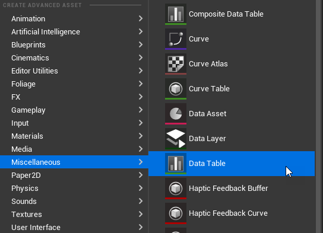
- Выберите GameplayTagTableRow в выпадающем списке.
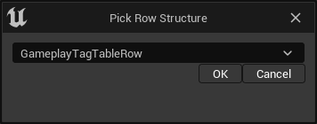
- Нажмите «Ок».
- Введите «SoundscapeStates» как название таблицы данных.
- Кликните правой кнопкой мыши по новому активу таблицы данных и выберите «Редактировать»... в контекстном меню. Появляется новое окно редактора таблицы данных.
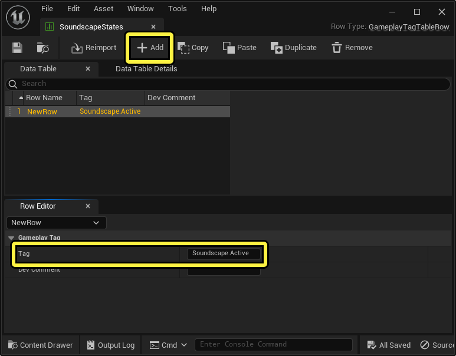
- Нажмите «Добавить», чтобы создать новый тег игрового процесса.
- Измените тег в панели редактора строк на «Soundscape.Active».
- Сохраните таблицу данных.
2 - Добавить таблицу данных в настройки проекта
Вы должны добавить теги игрового процесса в центральный словарь тегов в настройках проекта, чтобы движок знал о них. Для получения дополнительной информации о тегах игрового процесса см. раздел «Теги геймплея».
- Перейдите в раздел «Редактировать > настройки проекта»... чтобы открыть панель «Настройки проекта».
- Слева на панели нажмите GameplayTags под заголовком Project.
- Нажмите Add Element для списка таблицы тегов геймплея.
- Нажмите на выпадающее меню Index [0] и выберите ранее созданную таблицу данных SoundscapeStates. Звуковой ландшафт. Активное состояние теперь отображается в списке тегов геймплея.
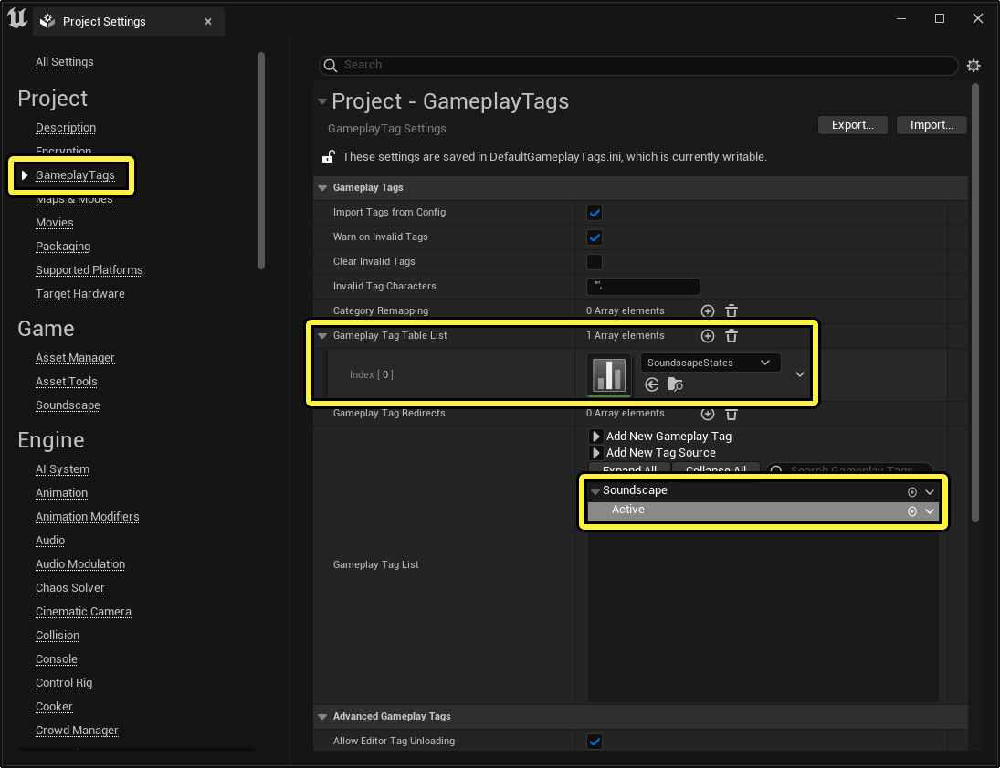
3 - Создать палитру звукового ландшафта и цвет
Система звукового ландшафта управляется двумя типами ассетов: палитрами и цветами. Цвет звукового ландшафта содержит ссылку на звуковой ассет и свойства поведения, которые управляют воспроизведением звука. Палитра звукового ландшафта содержит ссылки на цвета и условия воспроизведения, которые определяют, когда палитра активна.
- Создайте ассет Soundscape Palette, нажав «Добавить контент» или кликнув правой кнопкой мыши по пустому месту в Content Browser и выбрав Audio > Soundscape > Soundscape Palette.
- Введите любое желаемое имя для Палитры. В целом это имя должно отражать условие, активирующее Палитру.
- Создайте ассет Soundscape Color, нажав «Добавить контент» или кликнув правой кнопкой мыши по пустому пространству в Content Browser и выбрав Audio > Soundscape > Soundscape Color.
- Введите любое желаемое название цвета. В целом, это название должно отражать содержание звука, который будет воспроизводить цвет.
4 - Добавить палитру в настройки проекта
Вы должны добавить Soundscape Palettes в коллекцию Soundscape Palettes в настройках проекта, чтобы движок знал о них.
- Перейдите в раздел «Редактировать > настройки проекта»... чтобы открыть панель «Настройки проекта».
- Слева на панели нажмите Soundscape под заголовком Game.
- Нажмите Add Element для коллекции палитры Soundscape.
- Нажмите на выпадающее меню, чтобы выбрать ранее созданную палитру Soundscape.
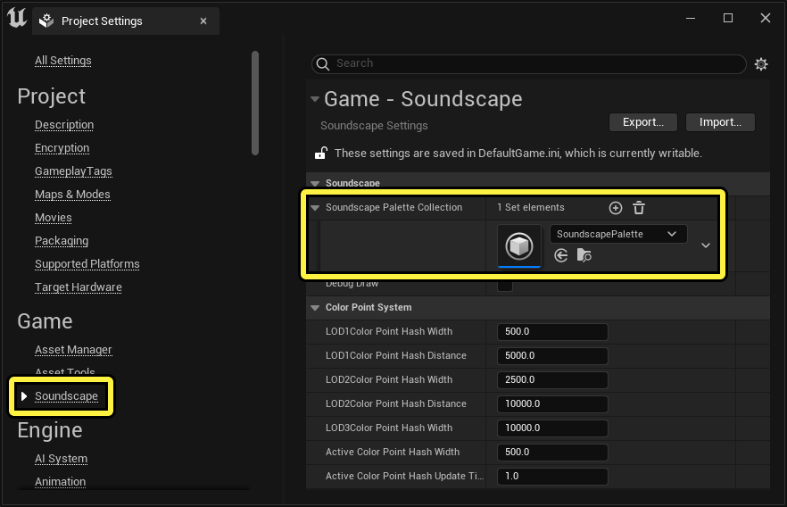
5 - Настройте палитру
Ваша палитра находится в коллекции, но её всё равно нужно настроить.
- Дважды кликните по палитре звукового пейзажа в Content Browser, чтобы открыть панель Details.
- Нажмите «Редактировать»... рядом с условиями воспроизведения палитры звукового ландшафта. Появляется новое окно редактора тегов.
- Нажмите на выпадающее меню Root Expression и выберите All Tags Match. Появляется новая запись Tags.
- Нажмите на выпадающее меню Теги и выберите Soundscape.Active.
- Нажмите «Сохранить и закрыть» в левом верхнем углу окна редактора тегов.
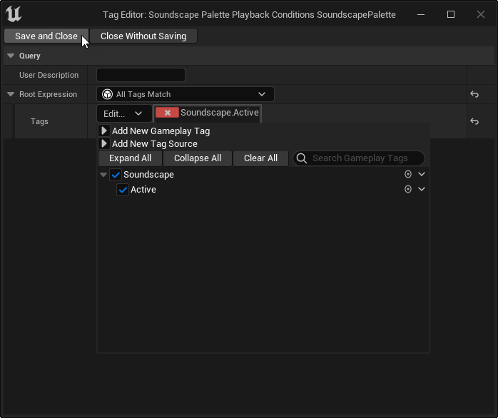
- Нажмите «Add Element» для цветов.
- Нажмите на стрелку слева от Index [0], чтобы расширить этот раздел.
- Нажмите на выпадающее меню Soundscape Color и выберите ранее созданную палитру Soundscape для Index [0].
- Сохраните палитру звукового ландшафта.
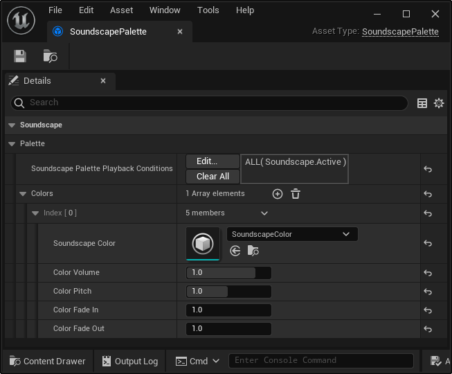
6 - Настройте цвет
Теперь, когда ваш Цвет в палитре, добавьте к Цвету звук и некоторое поведение.
- Дважды кликните по цвету Soundscape в Content Browser, чтобы открыть панель Details.
- Выберите выпадающее меню Soundscape > Color > Sound и выберите ассет Sound Wave, который вы хотите воспроизводить.
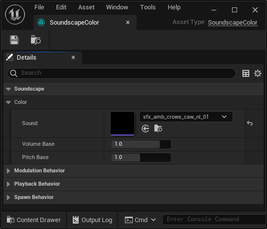
- Включите галочку для Modulation Behavior > Randomize Pitch. Это рандомизирует высоту звука каждый раз при воспроизведении.
- Включите галочку «Поведение спавна» > Непрерывное возрождение. Это постоянно вызывает звук.
- Вводите 50.0 для поведения спавна > максимальной дистанции появления. Это создаёт звук ближе к слушателю.
- Сохраните цвет звукового ландшафта.
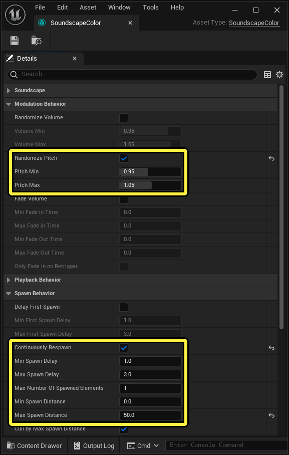
7 - Нажать громкость триггера
Звук внутри вашего цвета будет воспроизводиться, когда условие вашей палитры выполнено. Это условие будет выполнено при установке звукового ландшафта GameplayTag. Active. Используя Blueprint или C++, вы можете задать состояние как угодно, но для этого руководства используйте Level Blueprint и Trigger Volume для определения области уровня для воспроизведения звукового ландшафта.
- Разместите Trigger Volume в вашем уровне, используя панель Place Actors или нажав Quick Add в панели инструментов редактора уровней и выбрав Volumes > Trigger Volume.
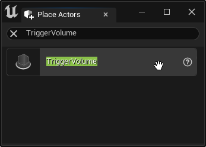
- Отрегулируйте положение, размер и форму громкости триггера внутри уровня, чтобы ваш персонаж мог перемещаться в него и выходить из него.
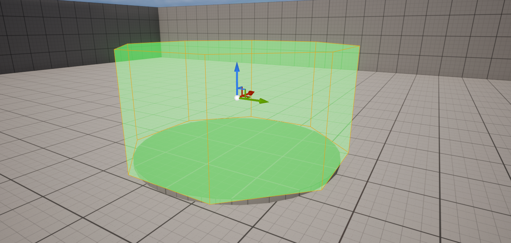
8 - Подготовьте чертеж
- Выберите громкость триггера.
- Нажмите кнопку Blueprint в панели инструментов редактора уровней и выберите Open Level Blueprint.
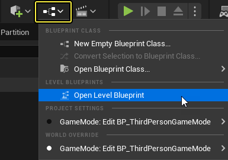
- Кликните правой кнопкой мыши по пустому пространству на графе и добавьте узел On Actor Begin Overlap для Trigger Volume.
- Кликните правой кнопкой мыши по пустому пространству на графе и добавьте узел On Actor End Overlap для Trigger Volume.
- Кликните правой кнопкой мыши по пустому месту на графе и добавьте узел Get SoundscapeSubsystem.
- Перетащите контактное соединение из подсистемы Soundscape в пустое пространство на графе и добавьте связанный узел Set State.
- Перетащите контактное соединение из подсистемы Soundscape в пустое пространство на графе и добавьте подключённый узел Clear State.
- Подключите контакт исполнения узла On Actor Begin Overlap к узлу Set State.
- Подключите контакт выполнения узла On Actor End Overlap к узлу Clear State.
- Сохраните чертёж уровня.
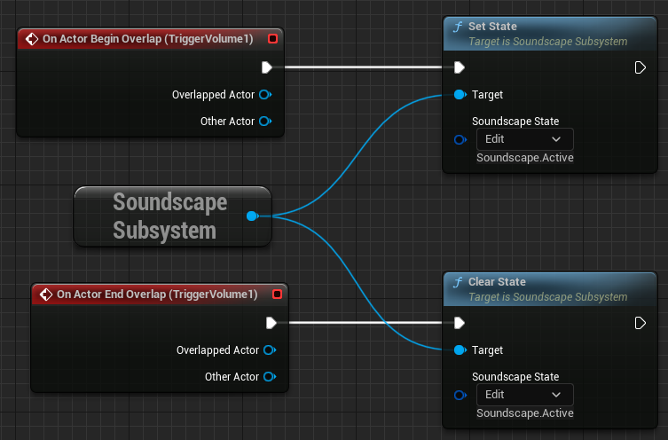
9 - Слушайте результаты
- Нажмите кнопку Play Level в панели инструментов редактора уровней.
- Переведите персонажа в Trigger Volume и остановитесь.
- Слушайте свой новый Soundscape!
Следующие консольные команды могут быть полезны для продолжения развития вашего звукового ландшафта:
- au.debug.sounds 1: Отображает список всех активных звуков на вашем уровне и связанную информацию в вашем окно.
- au.3dVisualize.Enabled 1: Отображает расположение активных звуков в 3D-пространстве.
Для получения дополнительной информации о аудиоконсольных командах см. раздел «Аудио-консольные команды».
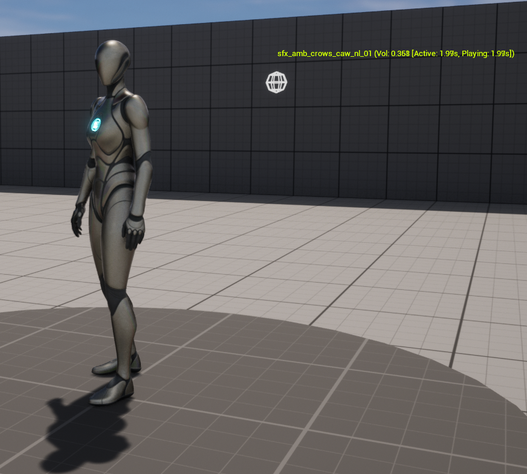
10 — В одиночку!
Теперь, когда вы закончили создание базового звукового ландшафта, подумайте о том, чтобы доработать его ещё дальше.
Ниже приведены некоторые советы, которые вы можете изучить самостоятельно:
- Создайте больше SoundscapeState, чтобы поддерживать дополнительные условия на вашем уровне.
- Используйте Blueprints или C++ для написания дополнительной логики для других окружающих ситуаций, например, времени суток.
- Экспериментируйте с деталями ваших цветов и палитр, чтобы изменить их поведение.
- Добавьте больше цветов в палитру, чтобы наложить дополнительные звуки.
- Добавьте больше Палитр в Звуковой Ландшафт для самостоятельного использования или для слоёв с существующими Палитрами.
- Вместо звуковой волны используйте источник MetaSound для вашего цвета. См. MetaSounds для получения дополнительной информации.